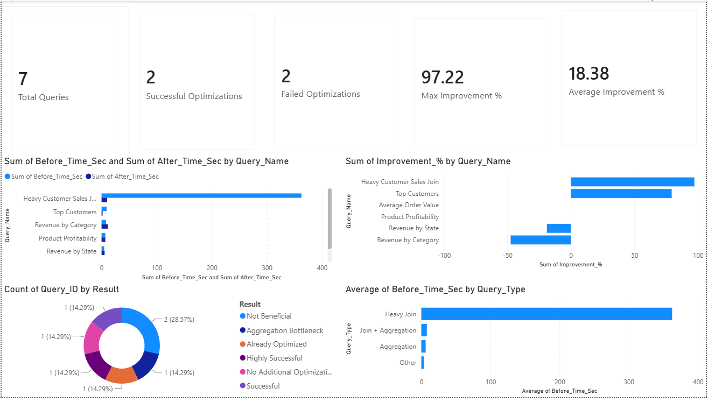

Sql Query Optimization & Performance Engineering Project

Business Problem
This project demonstrates SQL performance tuning techniques on large-scale analytical datasets containing millions of records.
Objectives
The objective was to identify slow-performing SQL queries using EXPLAIN and EXPLAIN ANALYZE, optimize execution plans using indexing strategies, and measure performance improvements through benchmarking.
Technology Used
Python
Pandas
SQL
MySQL
EXPLAIN / EXPLAIN ANALYZE
Index Optimization
Power BI
Tableau
GitHub
Project Workflow
- Data generation
- Database Schema Design
- Data Loading
- Baseline Performance Testing
- EXPLAIN Plan Analysis
- Index Optimizations
- Benchmark Comparison
- Dashboard Creation(Power bi & Tableau)
Business KPIs
- Total Queries
- Successful Optimization
- Failed Optimization
- Max Improvement %
- Average Improvement %
Dashboard Preview